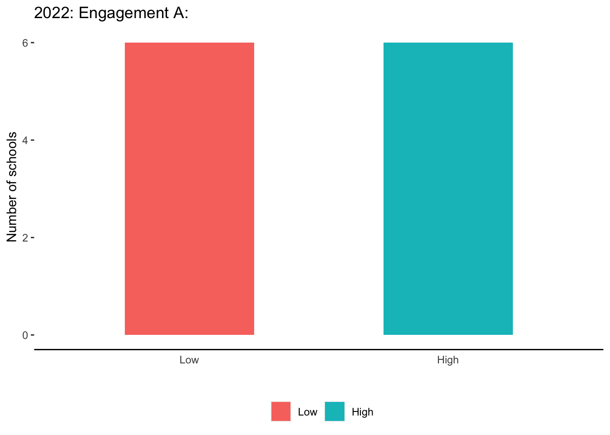

Report 2021/2022
Acknowledgements
Friends, Romans, countrymen, lend me your ears; I come to bury Caesar, not to praise him. The evil that men do lives after them; The good is oft interred with their bones; So let it be with Caesar. The noble Brutus Hath told you Caesar was ambitious: If it were so, it was a grievous fault, And grievously hath Caesar answer’d it. Here, under leave of Brutus and the rest– For Brutus is an honourable man; So are they all, all honourable men– Come I to speak in Caesar’s funeral. He was my friend, faithful and just to me: But Brutus says he was ambitious; And Brutus is an honourable man. He hath brought many captives home to Rome Whose ransoms did the general coffers fill: Did this in Caesar seem ambitious?
Executive Summary
Friends, Romans, countrymen, lend me your ears; I come to bury Caesar, not to praise him. The evil that men do lives after them; The good is oft interred with their bones; So let it be with Caesar. The noble Brutus Hath told you Caesar was ambitious: If it were so, it was a grievous fault, And grievously hath Caesar answer’d it. Here, under leave of Brutus and the rest– For Brutus is an honourable man; So are they all, all honourable men– Come I to speak in Caesar’s funeral. He was my friend, faithful and just to me: But Brutus says he was ambitious; And Brutus is an honourable man. He hath brought many captives home to Rome Whose ransoms did the general coffers fill: Did this in Caesar seem ambitious?
Background
Friends, Romans, countrymen, lend me your ears; I come to bury Caesar, not to praise him. The evil that men do lives after them; The good is oft interred with their bones; So let it be with Caesar. The noble Brutus Hath told you Caesar was ambitious: If it were so, it was a grievous fault, And grievously hath Caesar answer’d it. Here, under leave of Brutus and the rest– For Brutus is an honourable man; So are they all, all honourable men– Come I to speak in Caesar’s funeral. He was my friend, faithful and just to me: But Brutus says he was ambitious; And Brutus is an honourable man. He hath brought many captives home to Rome Whose ransoms did the general coffers fill: Did this in Caesar seem ambitious?## Aim
Methodology
Quant: Compare results from all schools – 2021 and 2022
Demographics of schools participating in the self-assessment tool (SAT): 2021 & 2022
Pie charts side-by-side: 2021 and 2022. Sector, Type, SES, ADII, Metro/non-metro; 2022 only: Engagement A (Low, High) and Engagement B (Low, Medium, High)
2021: Participants by sector
Plot 1
Participants by sector
by Sector 2022
2021 Participants by school type.
2022 Participants by school type.
Figure 3. 2021 Participants by SES
2022 Participants by SES
Figure 4. 2021 Participants by ADII
Figure 4. 2022 Participants by ADII
Figure 5. 2021 Participants by location: metro / non-metro
Figure 5. 2022 Participants by location: metro / non-metro
Figure 6. Participants by DET region N/A Figure 7. Participants by eSmart status N/A
Figure 8. Part A: average (median) number of eSmart action items completed by sector (out of 23)
Figure 8. 2021: average (median) number of eSmart action items completed by sector (out of 23)

Figure 8. 2022: average (median) number of eSmart action items completed by sector (out of 23)

Figure 9. Part A: number of eSmart action items achieved (out of 23) by sector
NOTE combining two years makes this chart really messy, especially with 6 different colour/patterns combinations and scales in the original report
Figure 9. 2021 Part A: number of eSmart action items achieved (out of 23) by sector

Figure 9. 2022 Part A: number of eSmart action items achieved (out of 23) by sector

Figure 10. Part A: average (mean) completion of eSmart action items - all schools by Domain
# A tibble: 2 × 10
DATA GATEWA…¹ REPOR…² RESPO…³ SCHOO…⁴ PRE-S…⁵ PRE-S…⁶ POST-…⁷ POST-…⁸ TOTAL…⁹
<dbl> <dbl> <dbl> <dbl> <dbl> <dbl> <dbl> <dbl> <dbl> <dbl>
1 51 45 40 54 63 5 5 6 6 254
2 33 45 43 51 60 7 7 7 7 233
# … with abbreviated variable names ¹`GATEWAY BEHAVIOURS`, ²REPORTING,
# ³RESPONSE, ⁴`SCHOOL CLIMATE`, ⁵`PRE-SURVEY1`, ⁶`PRE-SURVEY2`,
# ⁷`POST-SURVEY1`, ⁸`POST-SURVEY2`, ⁹`TOTAL: Domains`2021/2022 - Figure 10. Part A: average (mean) completion of eSmart action items - all schools by Domain

Figure 11. Part A: average (mean) completion of eSmart action items by Domain by sector
# A tibble: 6 × 2
Categories n
<chr> <int>
1 Community partnerships 6
2 Effective school organisation 6
3 Effective teacher practices 6
4 eSmart curriculum 6
5 Respectful and caring school 6
6 School plans, policies, and procedures 6
Figure 12. Part A: Average (mean) completion by Domain by SES.
NOTE I have to turn it as otherwise the text is too small or the chart is too messy

Figure 13. Part B: results by Focus Area - all schools


Figure 16. Part B: results by Focus Area by school type

Figure 17. Part B: progress in eSmart journey - all schools
2021 and 2022

Engagement - 2022 data only
Engagement A (Low) - Type: 2022”
Engagement A (Low) - Sector: 2022”
Engagement A (Low) - SES: 2022”
Engagement A (Low) - ADII: 2022”
Engagement A (Low) - Metro: 2022”
Engagement A (High)
Engagement A (High) - Type: 2022”
Engagement A (High) - Sector: 2022”
Engagement A (High) - SES: 2022”
Engagement A (High) - ADII: 2022”
Engagement A (High) - Metro: 2022”
Engagement B
Engagement B (Low) - Type: 2022”
Engagement B (Low) - Sector: 2022”
Engagement B (Low) - SES: 2022”
Engagement B (Low) - ADII: 2022”
Engagement B (Low) - Metro: 2022”
Engagement B (High)
Engagement B (High) - Type: 2022”
Engagement B (High) - Sector: 2022”
Engagement B (High) - SES: 2022”
Engagement B (High) - ADII: 2022”
Engagement B (High) - Metro: 2022”
Engagement B (Med)
Engagement B (Med) - Type: 2022”
Engagement B (Med) - Sector: 2022”
Engagement B (Med) - SES: 2022”
Engagement B (Med) - ADII: 2022”
Engagement B (Med) - Metro: 2022”
end of pie charts for Engagement


Figure 18.How well-placed schools believe they are to prevent a situation: pre- vs. post-Part B: self-assessment
Figure 19. How well-placed schools believe they are to respond to a situation: pre- vs. post-Part B: self-assessment/
Pre-post 1


2021: How well-placed schools believe they are to prevent a situation: pre- vs. post-Part B: self-assessment
2021: How well-placed schools believe they are to respond to a situation: pre- vs. post-Part B: self-assessment
2022
2022: How well-placed schools believe they are to prevent a situation: pre- vs. post-Part B: self-assessment
2022: How well-placed schools believe they are to respond to a situation: pre- vs. post-Part B: self-assessment
Figure 20. Comparison of Part A and Part B scores - all schools
Figure 21. two bar charts that include the 2021 vs. 2022 results for the six schools that completed the instrument both years – by Domain and total for Part A, and by Focus Area and total for Part B. ## Results
[Repeat charts from 2021 report, but with comparison to 2022 data. So, for example, bar charts would show both 2021 data (striped) next to 2022 data (solid). If charts get too crowded/too hard to read, can present side-by-side or vertically. Test for any statistically significant differences and indicate in chart.]
Part A Results
Part B Results
Summary – quantitative results
## Discussion [Integration of quant and qual results] ## Conclusion ## References ## Appendices